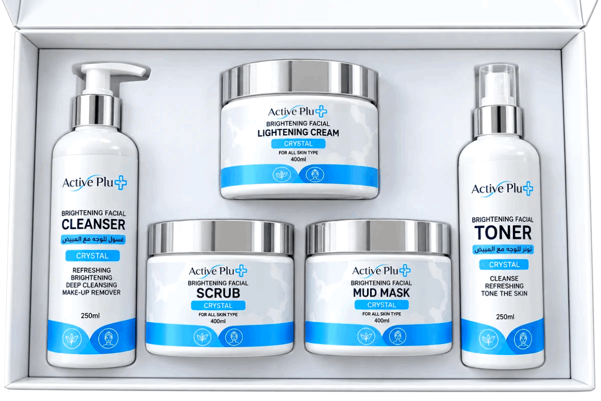
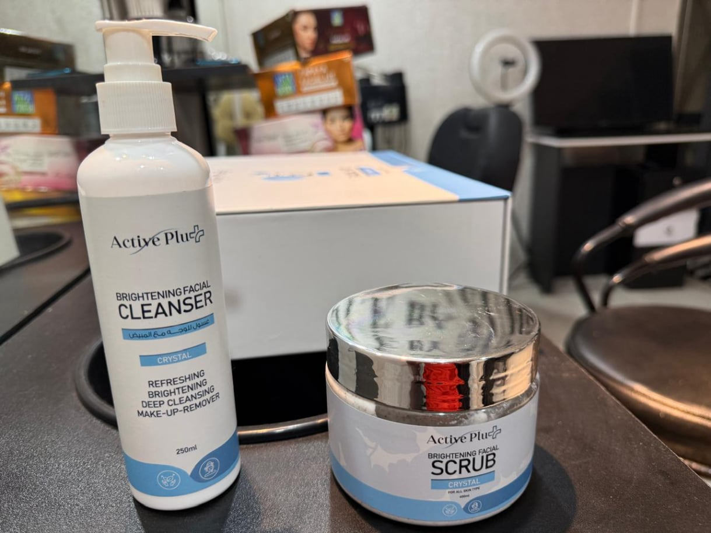
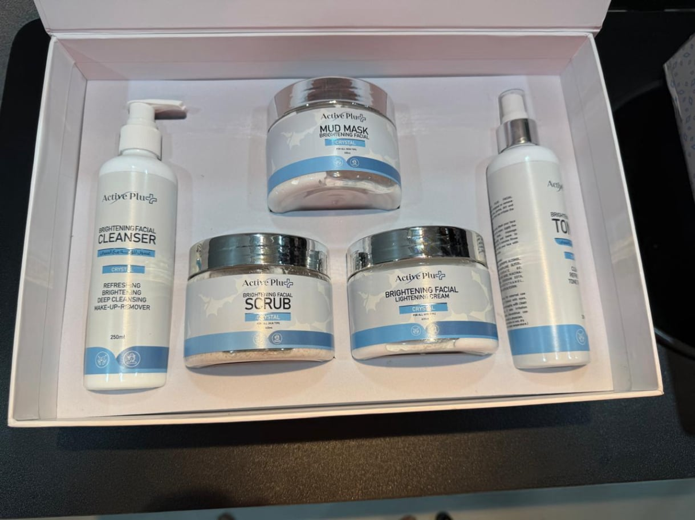
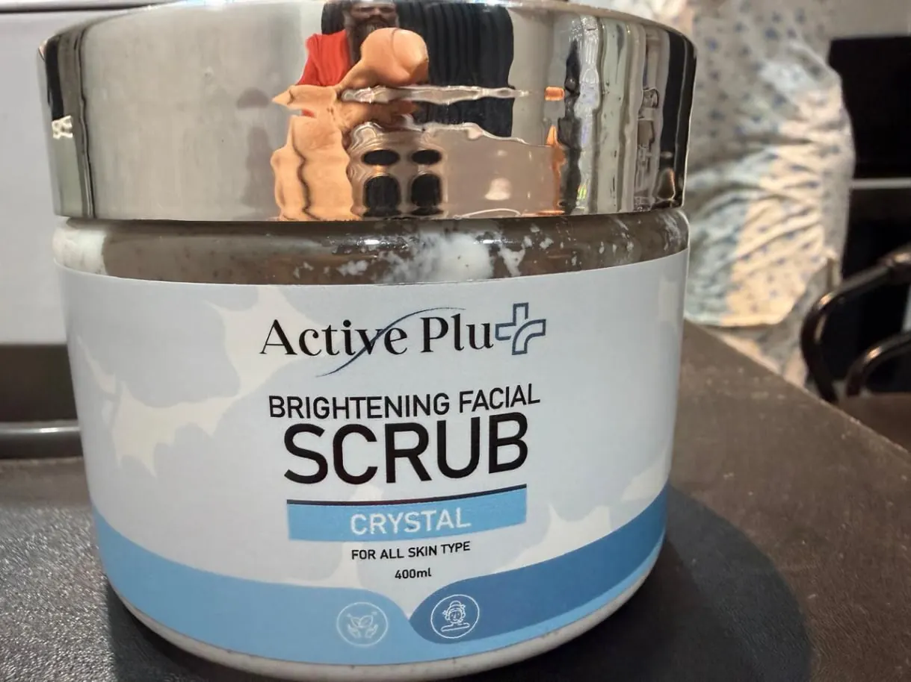
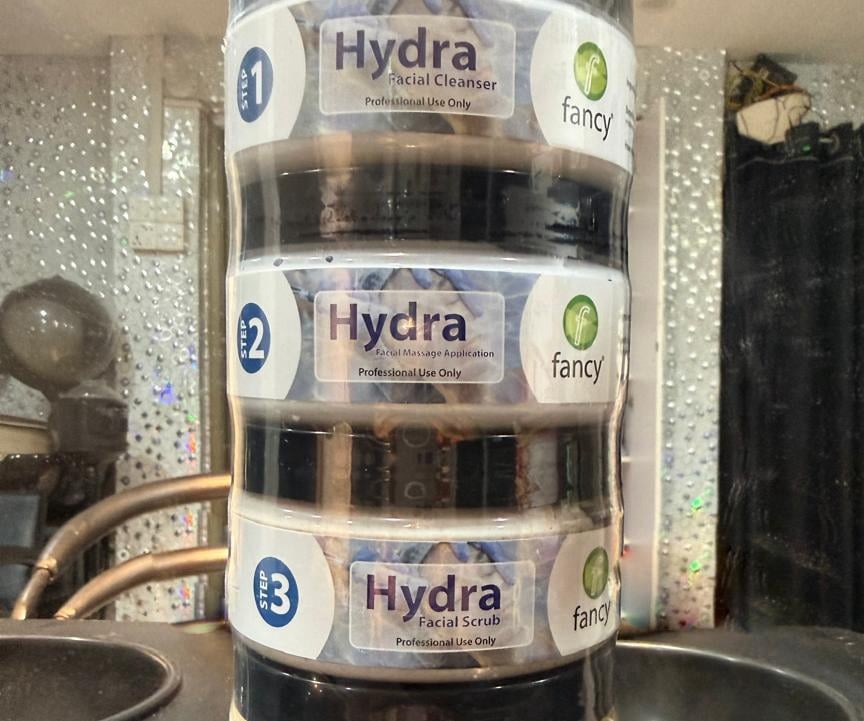

Our Special facial treatment helps cleanse, refresh, and nourish the skin while giving it a soft, radiant appearance.

Active Plus Gold Kit is designed to remove impurities, dirt, and excess oil from the skin. It prepares the skin for the subsequent steps by ensuring a clean and refreshed base




The Active Plus gold facial is a multi-step facial treatment carried out at Face by Sumona in Middle Arichpur, Tongi. Each product in the kit has a specific job: first the skin is cleaned of impurities, dirt and excess oil so the later steps can work on a fresh base, then a scrub exfoliates dead skin cells and unclogs pores, then a brightening treatment and a mineral mud mask follow.
The result is skin that looks brighter, smoother and more even in tone, which is why clients often book this facial in the days before a wedding, a party or a photo session rather than far in advance.
Tell us about your skin before the treatment starts. If you have sensitive skin, active breakouts, or you have recently had waxing or another facial, mention it — it may change what we recommend or how we sequence the steps.
Afterwards, keep the routine simple. Moisturise, avoid strong sun exposure, and hold off on harsh scrubs or strong active ingredients for a few days while the skin settles. If you want the brightness maintained, ask us how often to repeat the treatment for your skin type rather than booking on a fixed schedule.
To arrange an Active Plus gold facial, call or WhatsApp +880 1933-211642. The salon is open seven days a week, 10:00 AM to 9:00 PM, at 121 Hazi Bari, Sher E Bangla Road, Middle Arichpur, Tongi 1710, Gazipur.
It is a gold facial kit treatment that removes impurities, dirt and excess oil, then brightens and refreshes the skin using a lightning cream, scrub, brightening facial and mud mask.
Plan for roughly one hour at the salon. The exact time depends on your skin and the steps included in your session.
Yes. The Active Plus gold facial is a popular choice before weddings, parties and other special occasions because it leaves skin looking soft and radiant.
Keep the skin moisturised, avoid strong sun exposure and skip harsh scrubs or active ingredients for a few days. Call or WhatsApp us if your skin reacts unusually.